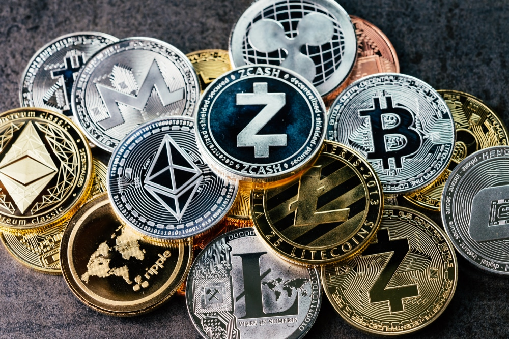
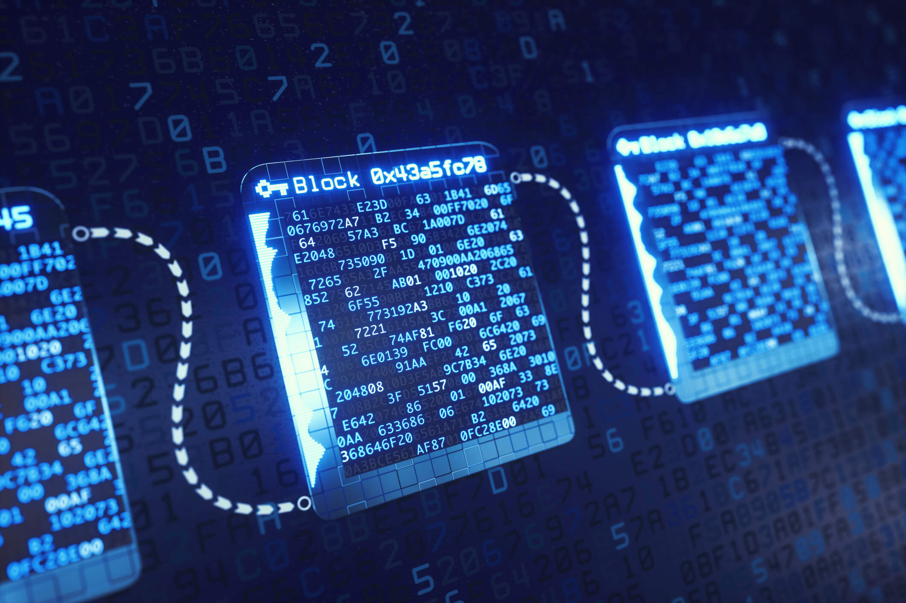
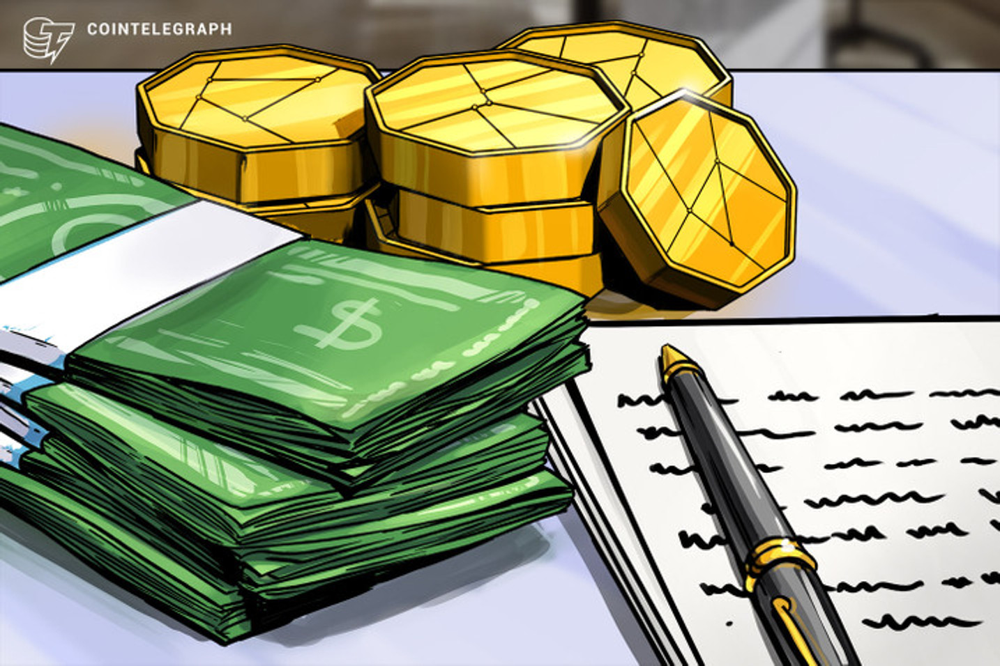
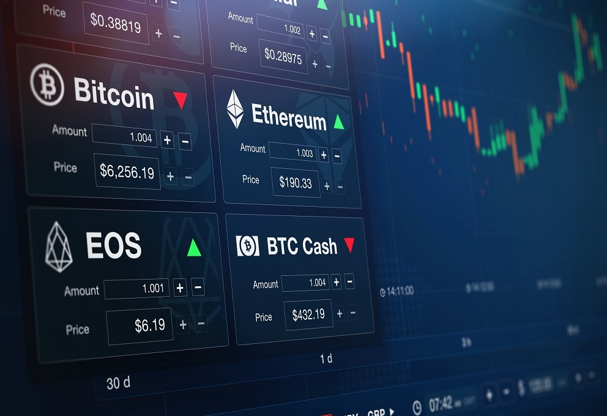
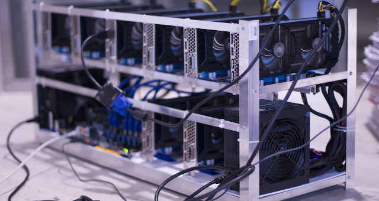

resumo do site
A criação deste site é para fins informativos sobre a nova era das criptomoedas, informar sobre as notícias, sua cotação em momento real, disponibilizar as ferramentas de análize de risco, recomendações de canais do youtube sobre analizes profissionais a respeito das moedas e seus possiveis projetos.
O que são criptomoedas?
Genericamente, uma criptomoeda é um tipo de dinheiro – como outras moedas com as quais convivemos cotidianamente – com a diferença de ser totalmente digital. Além disso, ela não emitida por nenhum governo (como é o caso do real ou do dólar, por exemplo).
Mas isso é possível? Para explicar que sim, Fernando Ulrich, autor do livro Bitcoin: A moeda na era digital, faz uma analogia bem simples: “O que o e-mail fez com a informação, o Bitcoin fará com o dinheiro”. Antes da internet, as pessoas dependiam dos correios para enviar uma mensagem a quem estivesse em outro lugar. Era preciso um intermediário para entregá-la fisicamente – inimaginável para quem tem acesso a e-mail e outros serviços de mensageria.
Algo semelhante acontecerá com as moedas virtuais no futuro. “Com o Bitcoin você pode transferir fundos de A para B em qualquer parte do mundo sem jamais precisar confiar em um terceiro para essa simples tarefa”, explica Ulrich no livro.

Embora o Bitcoin seja a moeda digital mais conhecida, o conceito de criptomoeda é anterior a ele. Segundo o site Bitcoin.org, mantido pela comunidade ligada ao Bitcoin, as criptomoedas foram descritas pela primeira vez em 1998 por Wei Dai, que sugeriu usar a criptografia para controlar a emissão e as transações realizadas com um novo tipo de dinheiro. Isso dispensaria a necessidade da existência de uma autoridade central, como acontece com as moedas convencionais.
https://www.infomoney.com.br/guias/criptomoedas/
O que são as blockchains ?
A tecnologia Blockchain nada mais é do que um livro de razão pública (ou livro contábil) que faz o registro de uma transação de moeda virtual (a mais popular delas é o Bitcoin), de forma que esse registro seja confiável e imutável.
Ou seja, a blockchain registra informações como: a quantia de bitcoins (ou outras moedas) transacionadas, quem enviou, quem recebeu, quando essa transação foi feita e em qual lugar do livro ela está registrada. Isso mostra que a transparência é um dos principais atributos da blockchain.

https://foxbit.com.br/o-que-e-blockchain/
Onde posso comprar uma criptomoeda ?
Há três formas de adquirir bitcoins e demais criptomoedas: a primeira é aceitando bitcoins como pagamento no seu negócio; a segunda é comprar de alguém que tenha bitcoins ou em uma corretora de criptomoedas; e a última é minerando bitcoins,a mais simples e rápida é através de uma corretora.
Para negociar bitcoin, você deve possuir uma conta em uma corretora de criptomoedas.
As mesmas são similares a uma casa de câmbio convencional, onde é possível trocar reais por dólares ou euros, mas nesse caso, você faria a troca de reais por bitcoin.

https://blog.clear.com.br/bitcoin/
O que são exchenges ?
As exchanges funcionam de maneira parecida com as corretoras tradicionais, já que elas possuem a função de intermediar as negociações de ativos. Porém, as exchanges funcionam como bolsas de valores independentes, o que faz com que as cotações possam variar entre elas. Sendo que, cada corretora de criptoativos possui prazos, livro de ofertas, taxas e bancos conveniados, diferentes entre si.
As exchanges e as corretoras tradicionais também são diferentes em relação à regulamentação. Isso porque, as corretoras devem seguir uma série de normas estabelecidas pelo Banco Central, com o intuito de que a corretora seja um ambiente seguro de intermediação de investidores. Inclusive, essas regras limitam os horários de funcionamento e os ativos que podem ser oferecidos.

Em contrapartida, as exchanges seguem regras mais flexíveis que possibilitam uma maior versatilidade da empresa. Além disso, as exchanges normalmente são mais ágeis nas transações e funcionam 24 horas por dia, 7 dias por semana. Os preços praticados são resultados da oferta e demanda (e das taxas) e não existe um mecanismo de controle dos preços, como ocorre com as corretoras tradicionais e o Circuit Breaker.
Ao adquirir ativos em uma corretora tradicional, eles são registrados em seu nome e não ficam com a corretora. Isso significa que se a corretora quebrar, você não terá nenhum prejuízo. Por outro lado, as exchanges fazem a custódia dos criptoativos para o investidor. Portanto, caso a exchange quebre, o cliente pode perder todos os seus ativos.
https://investidorsardinha.r7.com/aprender/o-que-e-exchange-criptomoedas/
Como minerar criptomoedas?
A procura pela mineração de criptomoedasficou em alta após a valorização das moedas digitais. Porém, engana-se quem acredita que esse processo resume-se a descobrir ou fabricar novas moedas.
É um conjunto de ações para validar e processar as transações de uma moeda digital localizada na cadeia de blocos – blockchain. Em resumo, mineração de criptomoedas é a tarefa de encontrar a chave que criptografa os blocos, chamadas de “hash”.
Isso porque esses blocos atuam como um livro de registros, onde cada transação é registrada de forma cronológica e linear. E toda vez que um hash é encontrado por um minerador, por exemplo, ele informa na rede.
Assim, outros mineradores passam a trabalhar hash do próximo bloco. No caso do Bitcoin, por exemplo, toda vez que um minerador encontra um bloco válido, ele é recompensado com 12,5 Bitcoins.

Contudo, este trabalho requer esforço e custo computacional. Isso garante a complexidade para escrever novos blocos de transações no registro, evitando que um cibercriminoso possa gerar um bloco falso e o adicione à rede ou que modifique um bloco existente.
Vale lembrar, no entanto, que nem todas as criptomoedas funcionam da mesma maneira. A seguir, veja quais são os tipos de mineração.
Os 4 tipos de mineração de criptomoedas:
1. Mineração com CPU
2. Mineração com GPU
3. Mineração profissional
4. Mineração em nuvem
A mineração de Bitcoin em nuvens permite que as pessoas possam ganhar moedas sem hardware de mineração, sem software de mineração e sem gastos com eletricidade.
Também chamada de Bitcoin Cloud Mining, a tecnologia permite que você alugue o serviço de mineração de empresas que possuem os equipamentos necessários para minerar a criptomoeda.
https://financeone.com.br/mineracao-de-criptomoedas-tudo-precisa-saber/